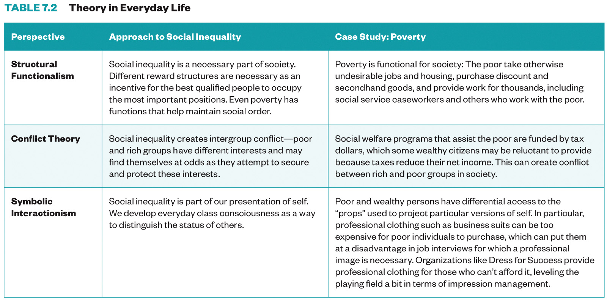

In this lesson, we will examine the stratification phenomenon that occurs in all human societies, our own included. Despite rhetorical claims about equality of opportunity for all, America is a profoundly hierarchical society, with the benefits and rewards of living here unequally distributed among its people. A sociological perspective on stratification will increase your understanding in several essential ways. First, it will help you recognize inequities in places you may have overlooked, such as your own town, neighborhood, or school. Second, it will help you consider how social divisions and hierarchies of privilege and disadvantage appear across many of our institutions; access to health care, the justice system, employment, and housing are all governed by structures of inequality. Third, it should enable you to identify your place in these social arrangements and see how your position (or your family’s position) in certain hierarchies has shaped your life chances. Finally, a knowledge of stratification may help you play a role in changing systems of inequality.
By the end of this lesson, you will be able to:
• Understand systems of social mobility and stratification.
• Describe social classes in the United States.
• Differentiate theoretical perspectives on social stratification.
• Apply appropriate research methods to understanding food insecurity.
American Factory 美国工𠂆 documents the revitalization of one long-shuttered factory in Dayton, Ohio, while providing a startling glimpse into the economic overhaul happening in towns and cities across the country — and the world. link
We will use the documentary film American Factory 美国工𠂆 as an opportunity to explore the sociology of work. We will watch it together during class.
Be sure to have the movie ready to go at the start of class.
Login to the course Slack by 9:45am and say hi to your group!
If you have any questions at all about what you are supposed to do on this lesson, please remember I am here to help. Reach out any time so I can support your success.
• Social stratification
• social inequality
• caste system
• apartheid
• Social class
• socioeconomic status (SES)
• intersectionality
• The U.S. Social Class Ladder
• Status Inconsistency
• Feudal System
• Wealth
• Prestige
• Cultural capital
• Social Reproduction
• everyday class consciousness,
• Social mobility
• Closed System
• Open System
• Intergenerational mobility
• Intragenerational mobility
• Structural mobility
• Relative and absolute deprivation
• Federal poverty line
• Culture of poverty
• Residential segregation
• Disenfranchisement
• digital divide.


Social class¶
In this lesson, we will examine the stratification phenomenon that occurs in all human societies, our own included. Despite rhetorical claims about equality of opportunity for all, America is a profoundly hierarchical society, with the benefits and rewards of living here unequally distributed among its people. A sociological perspective on stratification will increase your understanding in several essential ways. First, it will help you recognize inequities in places you may have overlooked, such as your own town, neighborhood, or school. Second, it will help you consider how social divisions and hierarchies of privilege and disadvantage appear across many of our institutions; access to health care, the justice system, employment, and housing are all governed by structures of inequality. Third, it should enable you to identify your place in these social arrangements and see how your position (or your family’s position) in certain hierarchies has shaped your life chances. Finally, a knowledge of stratification may help you play a role in changing systems of inequality.
Learning Objectives¶
By the end of this lesson, you will be able to:
• Understand systems of social mobility and stratification.
• Describe social classes in the United States.
• Differentiate theoretical perspectives on social stratification.
• Apply appropriate research methods to understanding food insecurity.
Deadlines¶
Be sure to hand these in before the deadline
InQuizitive Chapter Set 7 (Thursday at 9:30am)
SNAP Challenge application (Sunday at 11:55pm)
American Factory 美国工𠂆 reflection (Sunday at 11:55pm)
Read¶
‘Social Class’, Chapter 7 in Real World
Watch¶
Class Lecture Live on Tuesday at 9:45am.
CC:
“
Social Stratification
Why Is There Social Stratification?
Social Stratification in the US
Social Class & Poverty in the US
The Impacts of Social Class
Discuss (Thursday during class):¶
American Factory 美国工𠂆¶
We will use the documentary film American Factory 美国工𠂆 as an opportunity to explore the sociology of work. We will watch it together during class.
Be sure to have the movie ready to go at the start of class.
Login to the course Slack by 9:45am and say hi to your group!
Questions¶
If you have any questions at all about what you are supposed to do on this lesson, please remember I am here to help. Reach out any time so I can support your success.
Post it in the Slack #questions channel!
Signup for virtual office hours!
Email me or your TA.
Lesson Keywords¶
• Social stratification • social inequality • caste system • apartheid • Social class • socioeconomic status (SES) • intersectionality • The U.S. Social Class Ladder • Status Inconsistency • Feudal System • Wealth • Prestige • Cultural capital • Social Reproduction • everyday class consciousness, • Social mobility • Closed System • Open System • Intergenerational mobility • Intragenerational mobility • Structural mobility • Relative and absolute deprivation • Federal poverty line • Culture of poverty • Residential segregation • Disenfranchisement • digital divide.
The least you need to know¶
Theoretical perspectives on social class
